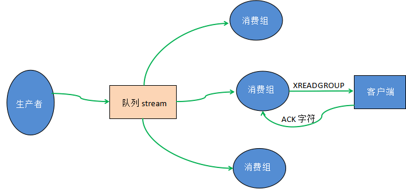

Redis Stream消息队列
Redis Stream 是 Redis 5.0 版本引入的一种新数据类型，同时它也是 Redis 中最为复杂的数据结构，本节主要对 Stream 做相关介绍。
一个 Stream 队列可以拥有多个消费组，每个消费组中又包含了多个消费者，组内消费者之间存在竞争关系。当某个消费者消费了一条消息时，同组消费者，都不会再次消费这条消息。被消费的消息 ID 会被放入等待处理的 Pending_ids 中。每消费完一条信息，消费组的游标就会向前移动一位，组内消费者就继续去争抢下消息。
Redis Stream 消息队列结构程如下图所示：

图1：Redis Stream流程处理图
返回值是毫秒时间戳格式的字符串。比如 1610619132674-2，它表示在该毫秒内产生的第 2 条消息。使用示例：
示例如下：
使用示例如下：
什么是Stream?
Stream 实际上是一个具有消息发布/订阅功能的组件，也就常说的消息队列。其实这种类似于 broker/consumer(生产者/消费者)的数据结构很常见，比如 RabbitMQ 消息中间件、Celery 消息中间件，以及 Kafka 分布式消息系统等，而 Redis Stream 正是借鉴了 Kafaka 系统。1) 优点
Strean 除了拥有很高的性能和内存利用率外, 它最大的特点就是提供了消息的持久化存储，以及主从复制功能，从而解决了网络断开、Redis 宕机情况下，消息丢失的问题，即便是重启 Redis，存储的内容也会存在。2) 流程
Stream 消息队列主要由四部分组成，分别是：消息本身、生产者、消费者和消费组，对于前述三者很好理解，下面了解什么是消费组。一个 Stream 队列可以拥有多个消费组，每个消费组中又包含了多个消费者，组内消费者之间存在竞争关系。当某个消费者消费了一条消息时，同组消费者，都不会再次消费这条消息。被消费的消息 ID 会被放入等待处理的 Pending_ids 中。每消费完一条信息，消费组的游标就会向前移动一位，组内消费者就继续去争抢下消息。
Redis Stream 消息队列结构程如下图所示：
图1：Redis Stream流程处理图
下面对上图涉及的专有名词做简单解释：
- Stream direction：表示数据流，它是一个消息链，将所有的消息都串起来，每个消息都有一个唯一标识 ID 和对应的消息内容（Message content）。
- Consumer Group ：表示消费组，拥有唯一的组名，使用 XGROUP CREATE 命令创建。一个 Stream 消息链上可以有多个消费组，一个消费组内拥有多个消费者，每一个消费者也有一个唯一的 ID 标识。
- last_delivered_id ：表示消费组游标，每个消费组都会有一个游标 last_delivered_id，任意一个消费者读取了消息都会使游标 last_delivered_id 往前移动。
- pending_ids ：Redis 官方称为 PEL，表示消费者的状态变量，它记录了当前已经被客户端读取的消息 ID，但是这些消息没有被 ACK(确认字符)。如果客户端没有 ACK，那么这个变量中的消息 ID 会越来越多，一旦被某个消息被 ACK，它就开始减少。
3) ACK
ACK（Acknowledge character）即确认字符，在数据通信中，接收方传递给发送方的一种传输类控制字符。表示发来的数据已确认接收无误。在 TCP/IP 协议中，如果接收方成功的接收到数据，那么会回复一个 ACK 数据。通常 ACK 信号有自己固定的格式，长度大小，由接收方回复给发送方。常用命令汇总
| 命令 | 说明 |
|---|---|
| XADD | 添加消息到末尾。 |
| XTRIM | 对 Stream 流进行修剪，限制长度。 |
| XDEL | 删除指定的消息。 |
| XLEN | 获取流包含的元素数量，即消息长度。 |
| XRANGE | 获取消息列表，会自动过滤已经删除的消息。 |
| XREVRANGE | 反向获取消息列表，ID 从大到小。 |
| XREAD | 以阻塞或非阻塞方式获取消息列表。 |
| XGROUP CREATE | 创建消费者组。 |
| XREADGROUP GROUP | 读取消费者组中的消息。 |
| XACK | 将消息标记为"已处理"。 |
| XGROUP SETID | 为消费者组设置新的最后递送消息ID。 |
| XGROUP DELCONSUMER | 删除消费者。 |
| XGROUP DESTROY | 删除消费者组。 |
| XPENDING | 显示待处理消息的相关信息。 |
| XCLAIM | 转移消息的归属权。 |
| XINFO | 查看 Stream 流、消费者和消费者组的相关信息。 |
| XINFO GROUPS | 查看消费者组的信息。 |
| XINFO STREAM | 查看 Stream 流信息。 |
| XINFO CONSUMERS key group | 查看组内消费者流信息。 |
基本命令应用
下面通过一组示例演示有关 Stream 命令的使用：
#添加一个消息， * 表示以时间戳自动创建id
127.0.0.1:6379> XADD mystream * username www.biancheng.net age 10 c.biancheng.net age 9
"1610619132674-1"
#自定义id等于001，注意id只增不减
127.0.0.1:6379> XADD mystream1 001 name zhangsan addr hebei
"1-0"
127.0.0.1:6379> XADD mystream1 002 name lisi addr hunan
"2-0"
#如果插入重复的id号会报错
127.0.0.1:6379> XADD mystream1 001 name wangwu addr fujian
(error) ERR The ID specified in XADD is equal or smaller than the target stream top item
127.0.0.1:6379> XADD mystream1 003 name wangwu addr fujian
"3-0"
#删除id=001的数据
127.0.0.1:6379> XDEL mystream1 001
(integer) 1
#查看stream队列包含的消息数量，也就消息长度
127.0.0.1:6379> XLEN mystream1
(integer) 2
#获取消息列表，-表示最小，+表示最大
127.0.0.1:6379> XRANGE mystream - +
1) 1) "1610619132674-0"
2) 1) "username"
2) "www.biancheng.net"
3) "age"
4) "10"
2) 1) "1610619178028-0"
2) 1) "username"
2) "c.biancheng.net"
3) "age"
4) "9"
#获取消息列表
127.0.0.1:6379> XRANGE mystream1 - 003
1) 1) "2-0"
2) 1) "name"
2) "lisi"
3) "addr"
4) "hunan"
2) 1) "3-0"
2) 1) "name"
2) "wangwu"
3) "addr"
4) "fujian"
#使用count指定返回数据的数量
127.0.0.1:6379> XRANGE mystream1 - 003 count 1
1) 1) "2-0"
2) 1) "name"
2) "lisi"
3) "addr"
4) "hunan"
#删除整个Stream
127.0.0.1:6379> DEL mystream
#使用xread读取消息
127.0.0.1:6379> XREAD count 2 STREAMS mystream1 2-0
1) 1) "mystream1"
2) 1) 1) "3-0"
2) 1) "name"
2) "wangwu"
3) "addr"
4) "fujian"
创建消息ID
上述示例中，当我们创建一个 Srteam 时， 需要创建消息 ID，该 ID 是唯一、不可重复的，并且只增不减。消息 ID 有两种创建方式，一是系统自动生成，二是自定义创建。1) 系统自动创建
语法格式如下：XADD key ID field value [field value ...]
参数说明如下：- key ：指定队列名称，如果不存就创建；
-
ID ：消息 id，我们使用
*表示由 redis 生成，可以自定义，但是要自己保证递增性； - field value ：消息记录。
返回值是毫秒时间戳格式的字符串。比如 1610619132674-2，它表示在该毫秒内产生的第 2 条消息。使用示例：
XADD mystream * username www.biancheng.net age 10
2) 自定义ID
自定义 ID 比较简单，但是需要注意的是 ID 的形式必须是 “整数”，并且后面加入消息的 ID 必须大于前面消息的 ID，也就是自定义 ID 也必须遵守递增的规则。示例如下：XADD mystream1 001 name zhangsan addr hebei
创建消费组
Redis Stream通过XGROUP CREATE指令创建消费组(Consumer Group)，在创建时，需要传递起始消息的 ID 用来初始化 last_delivered_id 变量。语法格式如下：XGROUP [CREATE key groupname id-or-$] [SETID key groupname id-or-$] [DESTROY key groupname] [DELCONSUMER key groupname consumername]参数说明如下：
- key ：指定 Stream 队列名称，若不存在则自动创建。
- groupname ：自定义消费组的名称，不可重复。
- $ ：表示从尾部开始消费，只接受新消息，而当前 Stream 的消息则被忽略。
示例如下：
#创建消费组，并传递消息起始id 0-0
127.0.0.1:6379> XGROUP CREATE mystream1 ms1 0-0
OK
#从尾部开始消费信息，只接受新消息
127.0.0.1:6379> XGROUP CREATE mystream1 ms3 $
OK
#xinfo查看队列信息
127.0.0.1:6379> XINFO stream mystream1
#队列中消息的长度
1) "length"
2) (integer) 2
3) "radix-tree-keys"
4) (integer) 1
5) "radix-tree-nodes"
6) (integer) 2
#有几个消费组
7) "groups"
8) (integer) 2
9) "last-generated-id"
10) "3-0"
11) "first-entry" #第一个消息
12) 1) "2-0"
2) 1) "name"
2) "lisi"
3) "addr"
4) "hunan"
13) "last-entry" #最后一个消息
14) 1) "3-0"
2) 1) "name"
2) "wangwu"
3) "addr"
4) "fujian"
#查看消费组信息
127.0.0.1:6379> XINFO GROUPS mystream1
1) 1) "name"
2) "ms1"
3) "consumers"
4) (integer) 0
5) "pending"
6) (integer) 0
7) "last-delivered-id"
8) "0-0"
2) 1) "name"
2) "ms3"
3) "consumers"
4) (integer) 0
5) "pending"
6) (integer) 0
7) "last-delivered-id"
8) "3-0"
消费消息
Redis Stream 通过XREADGROUP命令使消费组消费信息，它和XREAD命令一样，都可以阻塞等待新消息。读到新消息后，对应的消息 ID 就会进入消费者的 PLE（正在处理的消息）结构里，客户端处理完毕后使用 XACK 命令通知 Redis 服务器，本条消息已经处理完毕，该消息的 ID 就会从 PEL 中移除。示意图如下：

图2：Redis Stream 流程示意图
图2：Redis Stream 流程示意图
XREADGROUP命令的语法格式如下所示：XREADGROUP GROUP group consumer [COUNT count] [BLOCK milliseconds] STREAMS key [key ...] ID [ID ...]
参数说明如下：- group ：消费组名称。
- consumer ：消费者名称。
- count ： 要读取的数量。
- milliseconds ： 阻塞时间，以毫秒为单位。
- key ： 键指定的队列名称。
- ID ： 表示消息 ID。
使用示例如下：
#消费组中消费者读取消息，> 表示每当消费一个信息，消费组游标就前移一位
127.0.0.1:6379> XREADGROUP GROUP ms1 c1 COUNT 1 STREAMS mystream1 >
1) 1) "mystream1"
2) 1) 1) "2-0"
2) 1) "name"
2) "lisi"
3) "addr"
4) "hunan"
#再使用ms1-c1读取一条消息
127.0.0.1:6379> XREADGROUP GROUP ms1 c1 COUNT 1 STREAMS mystream1 >
1) 1) "mystream1"
2) 1) 1) "3-0"
2) 1) "name"
2) "wangwu"
3) "addr"
4) "fujian"
#BLOCK 1000表示等待1秒，如果没有任何消息到来，则返回nill，此时移动到了末尾
127.0.0.1:6379> XREADGROUP GROUP ms1 c1 COUNT 1 BLOCK 1000 STREAMS mystream1 >
(nil)
127.0.0.1:6379> XREADGROUP GROUP ms1 c1 COUNT 1 STREAMS mystream1 1
1) 1) "mystream1"
2) 1) 1) "2-0"
2) 1) "name"
2) "lisi"
3) "addr"
4) "hunan"
#超出了消息id的范围
127.0.0.1:6379> XREADGROUP GROUP ms1 c1 COUNT 1 STREAMS mystream1 3
1) 1) "mystream1"
2) (empty list or set)
#添加新的消息 ID为004
127.0.0.1:6379> XADD mystream1 004 name zhangwu age 24
#使用另外一个消费组读取消息
127.0.0.1:6379> XREADGROUP GROUP ms3 c2 COUNT 2 STREAMS mystream1 >
1) 1) "mystream1"
2) 1) 1) "4-0"
2) 1) "name"
2) "zhangwu"
3) "age"
4) "21"
#xack将id=002消息标记为已经处理
127.0.0.1:6379> XACK mystream1 ms1 002
(integer) 1
注意：>表示每当消费者读取一条消息时，last_delivered_id 变量就会前移一位。关注公众号「站长严长生」，在手机上阅读所有教程，随时随地都能学习。内含一款搜索神器，免费下载全网书籍和视频。

微信扫码关注公众号